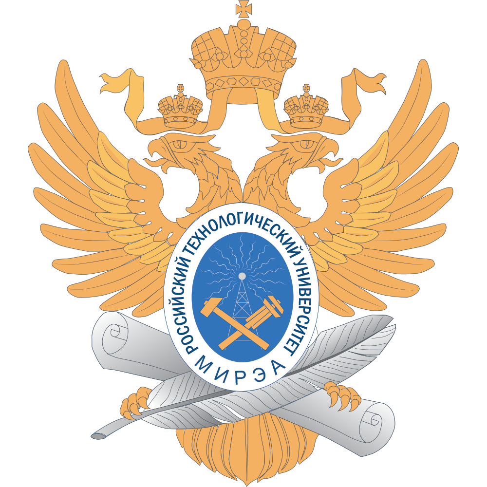

ЭЛЕКТРОННЫЙ УЧЕБНО-МЕТОДИЧЕСКИЙ КОМПЛЕКС
изучения учебной дисциплины "Тактико-специальная подготовка" по военно-учетной спциальности:
521300 - "Эксплуатация и ремонт аппаратуры электросвязи"
Открыть содержание
Тест по теме:
Способы организации связи радио, радиорелейными, тропосферными и спутниковыми средствами.
Содержание
Раздел 1. Организация связи в тактическом и оперативно-тактическом звене управления
Тема 1. Общие положения по организации связи в Сухопутных войсках Вооруженных Сил Российской Федерации
Тема 2. Организация связи в тактическом звене управления
Тема 3. Организация связи в оперативно-тактическом звене управления
Раздел 2. Система связи оперативного звена управления Сухопутных войск
Тема 2. Основы поддержания боевой готовности и всестороннего обеспечения боеготовности применения частей (подразделений) связи
Дополнительно
литература